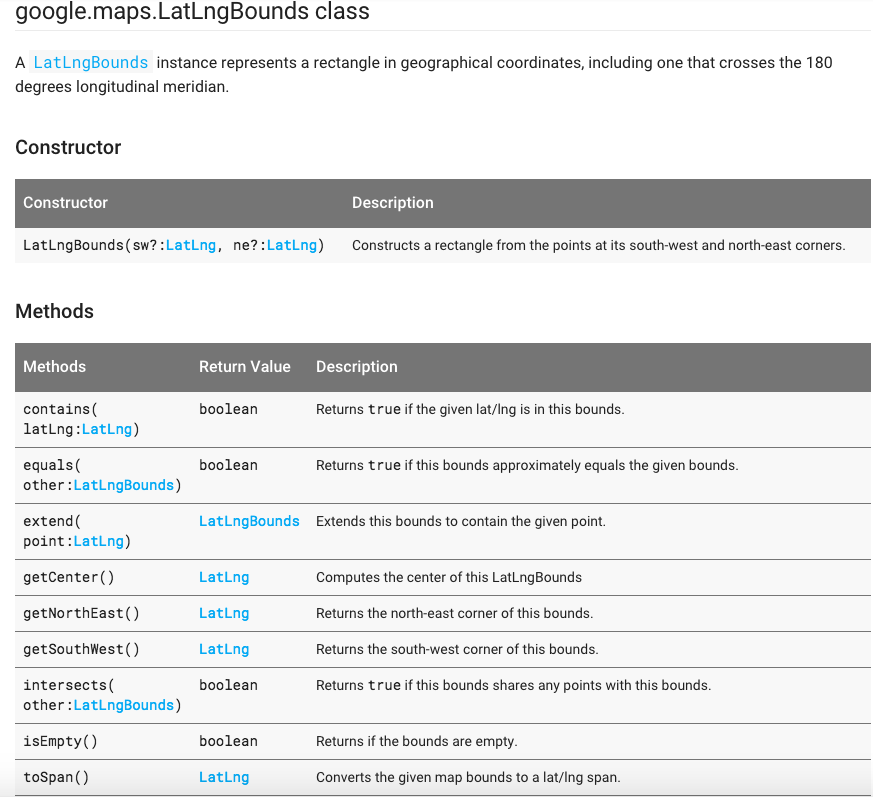
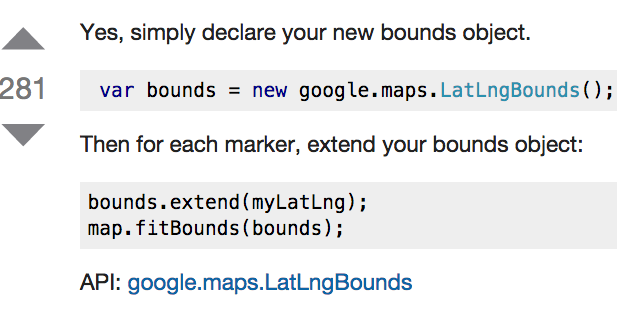

The getBounds() method returns the south-west latitude/longitude and the north-east latitude/longitude of the current viewport. Specifies a rectangle from the points at its south-west and north-east corners
The getCenter() method returns the latitude/longitude of the current center of the map.
Returns the north-east corner of this bounds.
Returns the south-west corner of this bounds.

